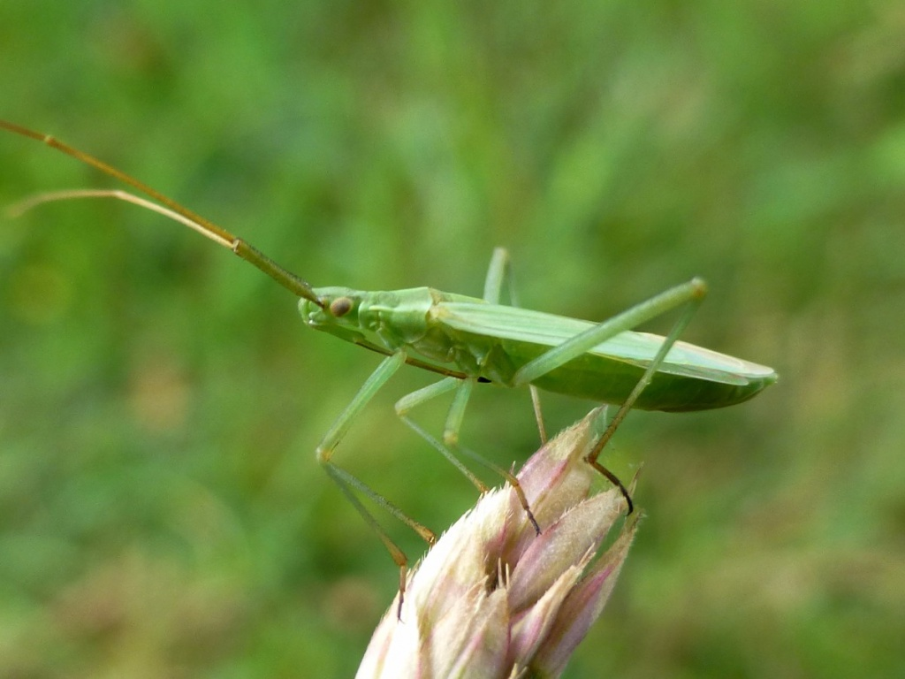

La Megaloceroea recticornis, aussi appelée Punaise verte à antennes droites, est une petite punaise de la famille des Miridae.
Elle se reconnaît facilement à son corps très fin, sa couleur verte à jaune pâle et surtout à ses très longues antennes.
Elle vit principalement dans les prairies et les zones herbeuses, où elle se trouve souvent sur les graminées.
Elle se nourrit en aspirant la sève des plantes grâce à son appareil buccal.
Avec sa forme allongée et sa couleur, elle peut facilement passer inaperçue parmi les herbes.
Elle mesure seulement environ 8 à 10 mm, malgré ses longues pattes et ses antennes.